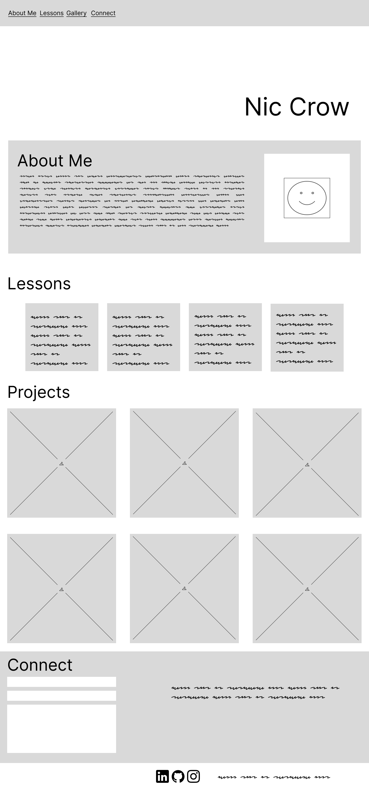

I'll use this space to introduce myself with my name and an image of my knits or an illustration relating to them.
This section will have more information about myself and my love of fiber arts and beyond. I'll use this section to highlight my other interests and skill sets. I will feature an image of myself here. The tone will be casual and enthusiastic.
Here I'll highlight my lessons for and from knitting in a post-it note style. I'd love to add the ability for the user to "refresh" this section and pull new content to the notes.
This responsive gallery will feature images of some of my favorite projects with a hover feature that shows information on each one.
Finally, I'll have a simple contact me form with text that welcomes connections for fiber arts and beyond. Beneath it will be a footer with links to my other social profiles and a note about the website being made by me.